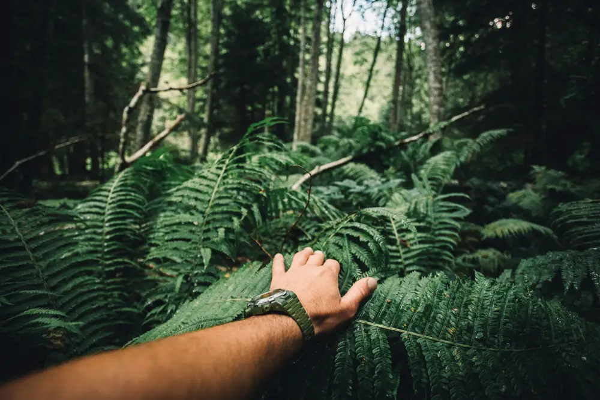
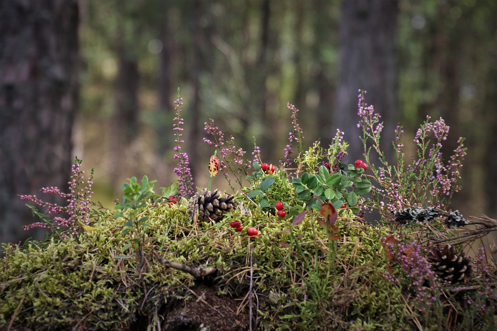

Au sein de notre école supérieure de survie, la première année de formation est conçue pour offrir à tous nos étudiants une base solide et homogène, posant les fondations essentielles pour évoluer dans le domaine exigeant de la survie en milieu hostile. Durant cette première année, chaque étudiant reçoit un enseignement général et global, permettant ainsi de créer un socle de connaissances et de compétences partagé par tous. Ce programme initial a pour objectif de familiariser nos étudiants avec les concepts fondamentaux de la survie, en abordant des matières qui couvrent un large spectre de compétences nécessaires.
Première année
→ Obligation d'avoir une licence STAPS pour rentrer en Première Année
→ Prix de l'inscription : 250€
Deuxième année
Au cours de la deuxième année de notre programme d'études en survie, les étudiants entament une phase de spécialisation qui les guide vers trois filières distinctes, offrant des voies spécifiques pour approfondir leurs compétences et leurs connaissances dans des domaines particuliers de la survie. Dans cette étape de la formation, les étudiants sont encouragés à choisir une orientation qui correspond le mieux à leurs intérêts personnels et à leurs objectifs professionnels. Chaque filière propose un ensemble de matières spécialisées visant à perfectionner les compétences dans des domaines spécifiques de la survie, offrant des opportunités d'apprentissage approfondi et de spécialisation pointue.
→ Prix de l'inscription : 500€
Première filière: Survie en Milieu Hostile et Sauvage
La filière axée sur la Survie en Milieu Hostile approfondit les techniques de survie dans des environnements spécifiques tels que les forêts tropicales, les montagnes ou d'autres lieux hostiles. Les matières de cette filière incluent des aspects pratiques et théoriques spécifiques à ces milieux, mettant l'accent sur la construction d'abris, la recherche de nourriture et les compétences de navigation adaptées à chaque environnement.
Deuxième filière : Technologies et Innovations pour la Survie
La filière des Technologies et Innovations pour la Survie se concentre sur l'utilisation et le développement de gadgets, d'équipements et de solutions techniques modernes adaptés à la survie en milieu hostile. Les étudiants de cette filière explorent des matières telles que la conception d'équipements innovants, les technologies de communication, les dispositifs de purification d'eau et d'autres innovations adaptées à la survie en milieu extrême.
Troisième filière : Ecologie et Durabilité en Survie
la filière axée sur l'Écologie et Durabilité en Survie met l'accent sur la compréhension des écosystèmes, la préservation de l'environnement et l'utilisation durable des ressources en situation de survie. Les matières de cette filière portent sur la conservation des écosystèmes, l'utilisation responsable des ressources naturelles et les pratiques durables pour minimiser l'impact environnemental.
Cours
Première année
| Matières | Description |
|---|---|
| Chasse | Couvre les techniques de chasse, de pêche et de gestion des ressources alimentaires en milieu sauvage. Les étudiants apprendront les méthodes de pêche adaptées à différents environnements aquatiques, les stratégies de chasse pour la capture du gibier, ainsi que les règles de sécurité et d'éthique dans l'obtention de nourriture en milieu naturel. |
| Botanique | Se concentre sur l'étude des plantes sauvages, en mettant l'accent sur l'identification des espèces comestibles, médicinales et utiles pour la survie. Les étudiants apprendront à reconnaître les plantes, à comprendre leurs propriétés et à les utiliser de manière responsable pour la nourriture, la médecine et la construction d'abris. |
| Tout-terrain | Couvre les compétences de déplacement en terrain varié. Les étudiants apprendront des techniques de randonnée, de navigation, de nage en eaux vives et les notions de sécurité en exploration hors des sentiers battus. |
| VLH (Vie en Lieu Hostile) |
Etude approfondie sur la vie en milieu hostile, abordant les techniques de survie spécifiques à divers environnements. Elle englobe la construction d'abris, la gestion des ressources, la sécurité personnelle et les défis liés à chaque type d'environnement.
|
| Sport | Vise à maintenir la condition physique des étudiants. En plus des activités de musculation, elle englobera des techniques de conditionnement physique spécifiques à la survie en milieu hostile, mettant l'accent sur l'endurance, la force et la résistance. |
| Premier Secours | Enseigne les compétences de secourisme essentielles en situations isolées ou d'urgence. Les étudiants apprendront les gestes de premiers secours, la gestion des blessures, les techniques de réanimation et les mesures de soins d'urgence adaptées à des environnements éloignés. |
Deuxième année
| Matières | Description |
|---|---|
| Techniques de survie en forêt tropicale | Étude des compétences nécessaires pour survivre dans les jungles tropicales, incluant la reconnaissance de la faune et de la flore, la construction d'abris végétaux, la sécurité alimentaire et la prévention des maladies tropicales. |
| Navigation et orientation avancée | Approfondissement des méthodes de navigation terrestre sans équipement moderne, en utilisant des repères naturels, les étoiles, les cartes topographiques et les outils rudimentaires. |
| Ethnobotanique et utilisation des plantes sauvages | Étude des plantes sauvages, de leurs propriétés médicinales, comestibles et utilitaires, et des techniques de reconnaissance pour l'usage en survie. Inclut également la préparation de remèdes naturels et la collecte responsable de plantes. |
| Psychologie de la survie | Exploration des aspects psychologiques liés à la survie en milieu hostile, y compris la gestion du stress, la prise de décision sous pression, l'adaptation au changement et la résilience mentale face à des situations extrêmes. |
| Art de la chasse et piégeage | Apprentissage des techniques de chasse, de piégeage et de pêche pour assurer la sécurité alimentaire en milieu sauvage. Comprend l'identification des traces animales, la fabrication de pièges et les techniques de pêche rudimentaires. |
| Météorologie et prévision climatique | Compréhension des phénomènes météorologiques, des signes de changement climatique, et des méthodes pour prédire les conditions météorologiques en milieu sauvage afin de mieux planifier les activités de survie. |
| Matières | Description |
|---|---|
| Conception d'équipements de survie avancés | Apprentissage des principes de conception et de développement d'outils, gadgets et équipements spécialisés pour la survie. |
| Technologies de communication en milieu isolé | Étude des systèmes de communication adaptés aux environnements isolés, incluant les radios à ondes courtes, les dispositifs de communication satellite et les réseaux de communication d'urgence. |
| Géolocalisation et cartographie avancée | Apprentissage des systèmes de géolocalisation avancés, des logiciels de cartographie et des techniques de représentation graphique pour la navigation précise en milieu isolé. |
| Technologie de purification de l'eau | Approfondissement des techniques avancées de purification d'eau pour rendre l'eau potable en milieu sauvage, incluant les systèmes de filtrage sophistiqués et les méthodes de désinfection. |
| Innovation en alimentation et nutrition pour la survie | Étude des avancées technologiques pour la production d'aliments adaptés à la survie, la conservation des nutriments et la fabrication d'aliments compactés pour les situations d'urgence. |
| Innovation en énergie durable pour la survie | Exploration des sources d'énergie renouvelables et durables adaptées à la survie, telles que les panneaux solaires portables, les générateurs éoliens compacts et les solutions de stockage d'énergie. |
| Matières | Description |
|---|---|
| Gestion des ressources naturelles en survie | Étude des techniques pour préserver et gérer les ressources naturelles limitées en situation de survie, en mettant l'accent sur la gestion de l'eau, des aliments et du bois de chauffe de manière durable. |
| Impact environnemental des activités de survie | Analyse des conséquences écologiques des activités de survie, et recherche de méthodes pour minimiser l'empreinte environnementale lors d'interventions en milieu sauvage. |
| Étude des écosystèmes et de la biodiversité | Exploration des écosystèmes naturels, de la biodiversité et des interactions entre les espèces pour mieux comprendre comment survivre sans nuire à l'environnement. |
| Techniques de construction respectueuses de l'environnement | Apprentissage des méthodes de construction d'abris et d'outils en utilisant des matériaux naturels tout en minimisant l'impact sur l'environnement. |
| Durabilité alimentaire en survie | Étude des méthodes de récolte, de chasse et de pêche durables en milieu sauvage, ainsi que des pratiques de conservation des ressources alimentaires pour une survie à long terme sans épuiser l'écosystème. |
Examens
Examen final de première année
- Epreuve initiale de compétence de survie : L'examen final de la première année est conçu pour évaluer de manière globale les compétences de base acquises par les étudiants en survie en milieu hostile et sauvage. Cet examen est une simulation intensive de 24 heures qui met les étudiants dans un environnement simulé, imitant un scénario de survie réaliste.
Examen final de deuxième année
Filière Survie en Milieu Hostile et Sauvage :
- → Examen Pratique de Survie en Milieu Réel : Les étudiants sont placés dans des environnements simulés pour mettre en pratique leurs compétences de survie. Ils doivent démontrer la capacité à construire des abris, à trouver de la nourriture, à naviguer et à gérer des situations de crise.
- → Étude de Cas en Milieu Hostile : Les étudiants reçoivent un scénario de survie fictif dans un environnement hostile spécifique (jungle, montagne, etc.) et doivent élaborer un plan détaillé de survie, incluant la gestion des ressources, la sécurité et les techniques spécifiques à cet environnement.
Filière Technnologies et Innovations pour la Survie :
- → Projet d'Innovation Technologique : Les étudiants doivent concevoir et présenter un projet innovant axé sur une technologie spécifique appliquée à la survie, en démontrant sa fonctionnalité, son efficacité et sa pertinence dans des situations extrêmes.
- → Analyse Critique de Dispositifs de Survie : Un examen théorique évalue la capacité des étudiants à analyser, critiquer et évaluer des dispositifs de survie existants, en mettant l'accent sur leur efficacité, leur durabilité et leur applicabilité dans des contextes divers.
Filière Ecologie et Durabilité en Survie :
- → Étude de Projet de Conservation Environnementale : Les étudiants doivent élaborer un projet de conservation environnementale spécifique à un milieu sauvage, en soulignant les techniques de préservation, la gestion des ressources et l'impact humain minimal sur l'écosystème.
- → Analyse Éthique des Pratiques de Survie : Un examen théorique évalue la capacité des étudiants à discuter et analyser les dilemmes éthiques liés aux pratiques de survie, en mettant l'accent sur la conservation de l'environnement et le respect des ressources naturelles.
→ Si l'année est validé, obtention du diplôme Master en Survie d'une des 3 filières